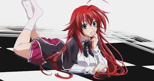
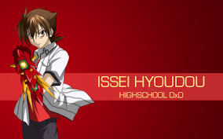

HighSchoolDxD, ¿Porque es mi Hobbie?
¿Por que decidí escribir acerca de HighSchool DxD? Para mi HighSchool DxD es un anime bastante bueno con un poco de todo, buena historia, excelente desarrollo de personajes, una animación hermosa y un poco de FanService para pasar el rato, Este anime se ha convertido en uno de mis favoritos y poco a poco se fue ganando un lugar en mi corazón debido a que cuanta la hisotria de un chico de preparatoria común como cualquiera de nosotros, donde el llega a convertirse en uno de los seres más poderosos en el mundo.
¿Que es HighSchool DxD? Este anime basado de una novela ligera del genero Ecchi/Harem, creada por un novelista llamdo Ichiei Ishibumi e ilustrada por Hiroji Mishima, es un anime que tiene mucho que dar a los fans por sus persoanjes y animaciones de batallas de las 3 grandes facciones contra y mas poderosas en el mundo los terroristas, estas facciones son: en el territorio del inframundo los demonios; en el territorio del cielo los angeles, exorcistas y sacerdotistas; y por ultimo en el territorio de la tierra donde es el lugar mas oscuro, los angeles caidos. Esas facciones forman una alianza para salvar a su gente de la destrucción, ahí es donde entra a escena Issei Hyoudou, un chico de preparatoria común con un gran libido y con un gran sueño, que es convertirse en el rey del Harem de un harem lleno de bellas chicas.
Este anime cuenta con 4 temporadas que abarcan hasta el volumen 10 de las novelas ligeras, al principio tuvo una casa de animacion llamada "TNK" que su diseño de personajes fueron los mas queridos por el fandom, sin embargo con la llegada de la tercer temporada fue un error total ya que no le fue fiel a las novelas, a partir de la cuarta temporada cambio de casa de animacion a "Passione" donde el diseño de personajes fuerno las mas semejantes a los de las novelas y mantuvo la historia original sin hacer ningun cambio en la obra original como lo hizo TNK; sin embargo Passione no fue muy bien resivida por sus diseños de personajes por gran parte del fandom, ya que dicen que sus diseños resultan muy infantiles y que los rostros parecen de niños, cosa que para un anime del genero Ecchi es algo mal visto.  En mi opinion y punto de vista me gusto bastante la nueva animación ya que es mas fiel a las novelas y la historia es totalmente fiel a la original; la primer temporada se estreno 1 año despues de la publicacion del primer volumen que fuen en el año 2012, la ultima temporada es la que tuvo una fecha más reciente de emisión, fue en el 2018; ahora mismo se tienen muchas expectativas para una quinta temporada donde cambiaran la casa de animación y será fiel a la historia original, además se rumorea que hay planes para una pélicula antes del estreno de la quinta temporada; este anime se convirtió en uno de mis favoritos debido a que la historia es muy buena, habla de religión y filosofia, además los personajes y sus desarrollos me parecen expectaculares y tanto los oppenings como los soundtracks u OST's son hermosos, no solo eso si no que también te muestran un estudiante promedio de preparatoria donde esta en la etapa de la pubertad donde es un gran pervertido al igual que muchos jovenes de la actualidad.
Issei Hyoudou, la historia del Sekiryuutei(Emperador Dragón Rojo)
 Esta serie nos narra la historia de Issei, un estudiante de preparatoria que destaca de entre todos por lo pervertido que es. Él siente que su vida hasta ese momento no ha sido plena, ya que no ha conseguido tener novia aún (para alguien como él, esto es muy importante). Sin embargo, se consuela un poco espiando los vestidores de chicas con sus dos amigos, Matsuda y Motohama; motivo por el cual reciben palizas de ellas cada vez que son descubiertos, cosa que pasa muy a menudo. La escuela en la que estudian Issei y sus amigos, admitía sólo chicas hasta hace poco. A causa de esto, la mayoría de estudiantes son mujeres. De entre ellas, algunas destacan por su belleza, como cierta pelirroja llamada Rias Gremory, que Issei ve justo después de recibir una de las mentadas palizas; tan bella le pareció que no pudo olvidar su bello rostro ni su hermoso cabello carmesí. Un día, a bocajarro y sin tiempo para pensarlo bien, una chica llamada Yuuma se acerca a nuestro protagonista y le confiesa sus sentimientos, invitándolo a salir. Sin cuestionar sus suerte, (que más a pedir de boca no pudieron salir las cosas) Issei acepta la proposición. De camino a casa, no cabe en sus zapatos de la felicidad. Llegado el día de la cita, Issei se dirige entusiasmado al lugar acordado. El y Yuuma pasan la tarde paseando por el centro comercial, pasándoselo bien. Estando la cita a punto de terminar, ambos se dirigen a un lugar más tranquilo, y ella le hace una pregunta: “¿Morirías por mí?”. Acto seguido, se transforma en un ángel y le atraviesa el torso con una lanza de luz.
Issei se pregunta, moribundo, por qué. Lamenta, entonces, profundamente que su vida vaya a apagarse tan temprano, sin haber sabido nunca lo que es el amor. Mira su pecho herido y toca su sangre. “Roja”, piensa, “roja como el cabello de la chica que vi aquel día” (Rias). Esta chica de cabello carmesí aparece frente a él y le ofrece salvarlo, pero solo si él acepta convertirse en su siervo. Él responde que sí sin pensarlo dos veces. Resulta que esta chica, llamada Rias Gremory, es un demonio y la jefa del Clan Gremory. Debido a esto, cuenta con múltiples siervos -demonios todos ellos- que forman parte de su clan. Issei, por supuesto, no era la excepción: Rias lo había salvado convirtiéndolo en un demonio. Issei no sabe si sentirse bien o mal al enterarse de su nueva naturaleza. No obstante, cuando le hacen saber que al ser demonio puede ascender de rango y tener sus propios siervos, él se fija un nuevo propósito: armar su propio harem. Es así como inicia su larga travesía para intentar volverse más fuerte, mas los caminos no estarán siempre despejados, y enfrentará un sinfín de obstáculos propios y ajenos.
Issei descubre que el posse un arma sagrada(Sacred Gear) llamada "Boosted Gear" que el invoca como un guante en su mano izquierda, debido a esto es porque Yuuma (nombre real: Raynare) lo atraviesa con una lanza de luz, ya que el puede volverse un gran peligro para los angeles caídos, este "Boosted Gear" es el gran Emperador Rojo(Sekiryuutei) quien fuen 1 de los 2 grandes emperadores dragones que librarón una batalla y detuvieron la guerra que en aquel tiempo se desató entre las 3 facciones. En todo esto se basa la historia principal donde vemos la vida diaria de Issei y como se desatan batallas, además vemos como se desarrolla como personaje y como se va conviertiendo en un ser muy poderoso en el mundo.